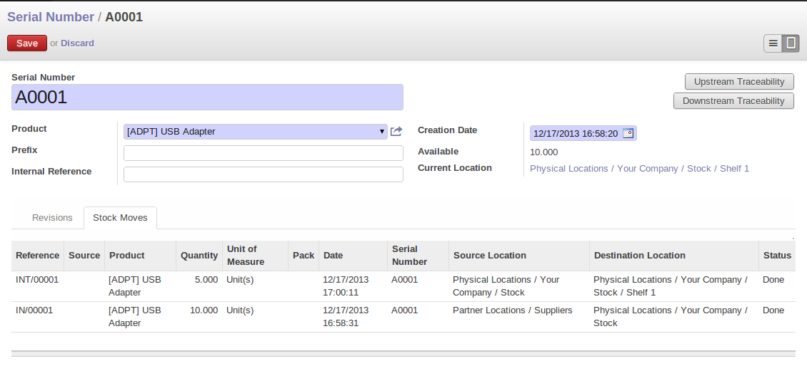

<section class="oe_container">
    <div class="oe_row oe_spaced">
        <div class="oe_span12">
            <h2 class="oe_slogan">Serial Number Tracking</h2>
            <h3 class="oe_slogan">Track products with serial numbers on every transactions</h3>
        </div>
        <div class="oe_span6">
            <div class="oe_demo oe_picture oe_screenshot">
                
            </div>
        </div>
        <div class="oe_span6">
            <p class="oe_mt32">
With the use of this module you can track the current location of the product with serial numbers.
            </p>
            <p class="oe_mt32">
When the products are moved from one location to another location, the system will automatically identify the current location of the product based on last movement of the product. So you can get the last location where the products are moved.
            </p>

            <div class="oe_centeralign oe_websiteonly">
                <a href="mailto:sales@openerp.com" class="oe_button oe_big oe_tacky">Contact Us</a>
            </div>
        </div>
    </div>
</section>

